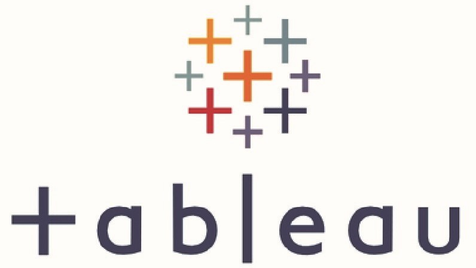
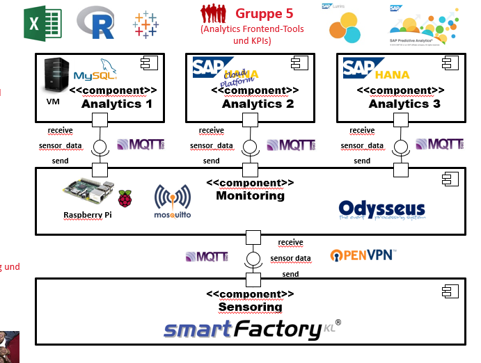

In diesem Projekt wurde mithilfe der Correlation-Matrix ermittelt, welche Kenngrößen am meisten die Bruttoeinnahmen eines Filmes
positiv beeinflussen können. Es wurde dabei Bibliotheken wie Pandas, Seaborn, Numpy und Matplotlib genutzt.
Diese "Explorative Daten Analyse" befasste sich mit der aktuellen Pandemie.
Es wurde deshalb COVID-19 Datasets aus Kaggle.com als Datenquelle genutzt.
Wichtige aggregierte Kennzahlen daraus sind unter anderem Ansteckungsrate, die Mortalität, Impfungsrate.
Nach der Datenanalyse aus dem vorherigen Projekt wurden manchen Queries-Ergebnisse als Sichten gespeichert.
Diese können wiederrum mit von Tableau visualisiert werden.
In diesem Projekt haben wir zum Beispiel eine Prognose für COVID Ansteckungsrate bis Ende des Jahres 2021
und eine Weltkarte für die gleiche Kenngröße veranschaulicht.

Dieser Projekt wurde am Ende unserer Coursera Schulung realisiert.
Die Daten befassen sich mit Häusern einer Region, die zwischen Mai 2014 und Mai 2015 verkauft wurden.
Dabei wurden Data Scrambling, EDA und auch Linear Regression Model angewendet.
In diesem Uni-Projekt sollte eine IoT-Integrationsarchitektur konzipiert werden. Mein Gruppe wurde beauftragt das DB Design
und die MySQL Anbindung über MQTT Protokoll an Broker mit mithilfe von Eclipse Paho zu realiseren.

Mit diesem Projekt wollen wir täglich den Preis einer Ware auf Amazon.de überwachen.
Damit können wir zum Beispiel die Ware ab einem bestimmten niedrigen Preis kaufen.
Die Information zum Preis wird per Mail gesendet, sobald einen gewünschten Preis erreicht wird.
Für diesen Projekt wurden zuerst Daten in Form von einer Excel Datei in das RDBMS "MS SQL Server" importiert.
Mithilfe von SQL Queries wurden sie bereinigt. Dabei wurden Funktionen für String-Verarbeitung,
wie zum Beispiel REPLACE, PARSENAME, SUBSTRING, CHARINDEX angewendet.